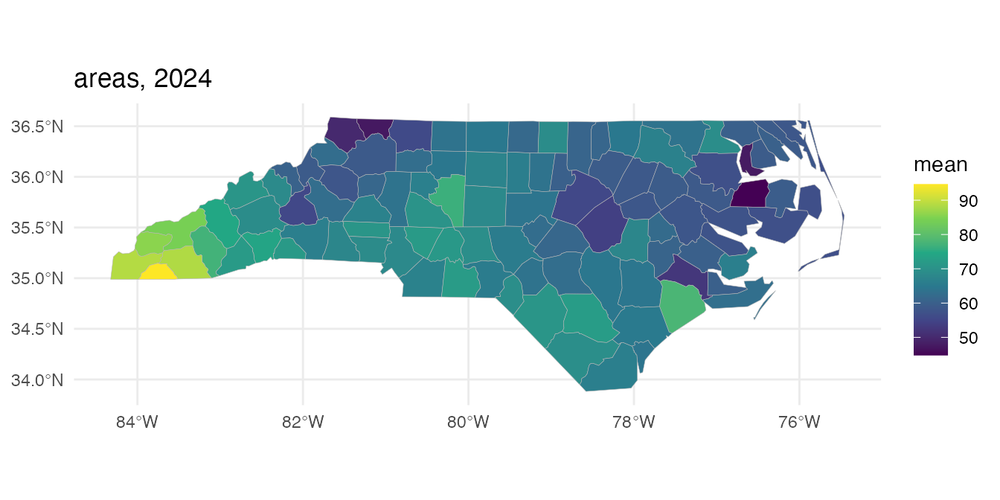
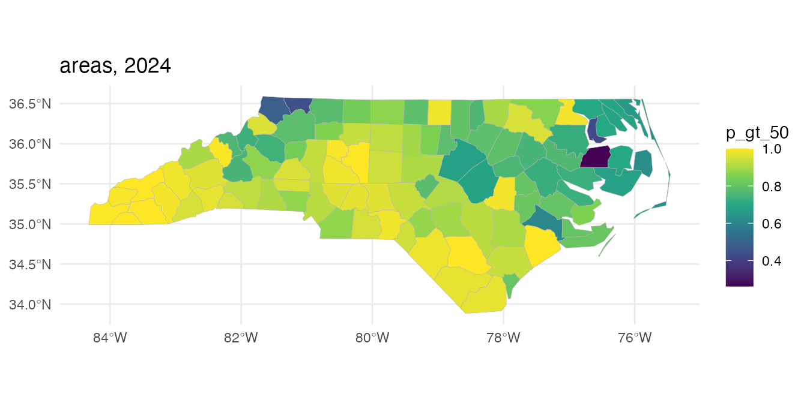
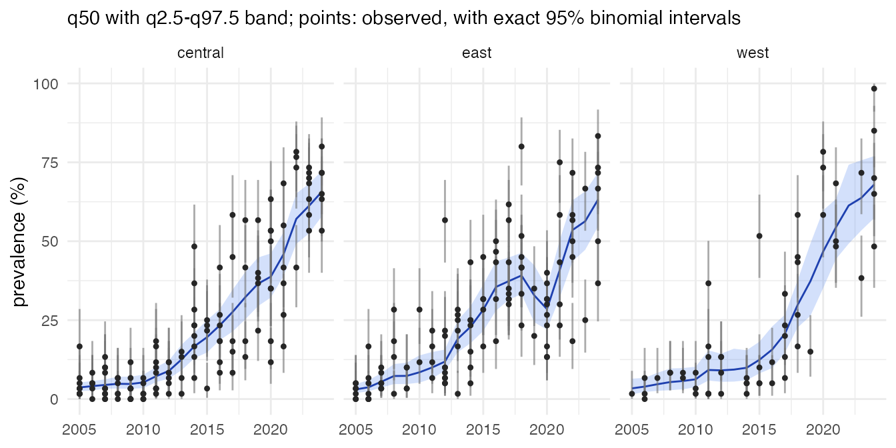
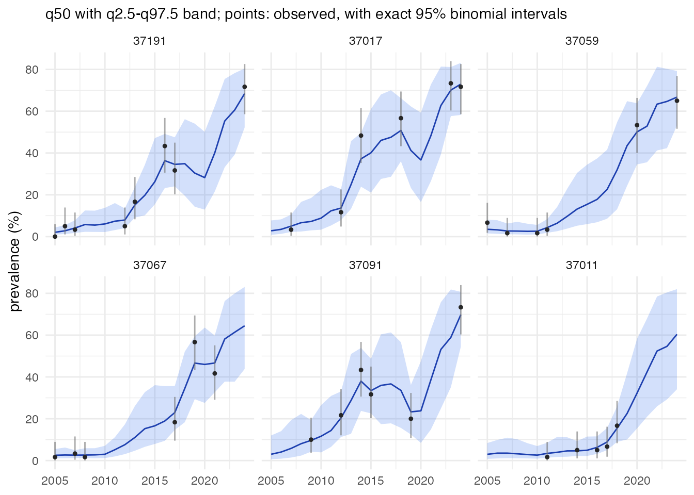

stareal maps prevalence from survey data, for example the share of infections carrying a drug-resistance marker, on a set of areal units (districts, counties, grid cells) and a regular time grid (months, quarters, years). It estimates every area in every time step, with uncertainty, including those that were never surveyed, and aggregates the estimates to coarser groupings such as regions or countries.
This vignette runs through a complete analysis on simulated data,
where the truth is known. The tutorials on the package
website work through real analyses: the chloroquine-resistance marker
crt K76T across the Greater Horn of Africa, an emerging artemisinin
partial-resistance marker, covariates, cross-validation and simulation
studies. The data are the 100 counties of North Carolina, which ship
with the sf package, over 20 years.
The model
Surveys report y positives out of k tested. Surveys in the same area and time step are pooled into one cell. The number positive in cell (area a, time t) is binomial, with logit prevalence
x_{at} = z_{at}^\top \beta + f_{at} + \epsilon_{at}.
- z_{at}^\top \beta are fixed effects: an intercept, by default a linear trend, and any covariates.
-
f is a Gaussian field with
separable covariance.
- In space it is a Leroux conditional autoregressive model on the adjacency graph of the areas, with scale \sigma and spatial dependence \rho_s.
- In time it is a first-order autoregression with correlation \rho_t.
- \epsilon is a cell-level nugget with standard deviation \sigma_n, for variation between surveys that the smooth field does not explain.
Most area-time cells have no data. Because the prior is Gaussian, those cells can be integrated out exactly, and so can \beta, so the sampler works on the observed cells only. A fit to a few thousand observed cells is then feasible, even when the full table has millions of cells. The full surface is reconstructed afterwards, once per posterior draw.
1. The spatial frame
A frame holds the areas, their adjacency graph and any groupings to
aggregate to. It is built from polygons (or from an adjacency matrix, or
as a regular lattice with areal_lattice()). Here the
counties are grouped into three regions by longitude.
library(stareal)
nc <- sf::st_read(system.file("shape/nc.shp", package = "sf"), quiet = TRUE)
lon <- sf::st_coordinates(suppressWarnings(sf::st_centroid(sf::st_geometry(nc))))[, 1]
nc$region <- cut(lon, 3, labels = c("west", "central", "east"))
fr <- areal_frame(nc, id = "FIPS", groups = c(county = "NAME", region = "region"))
#> adjacency (queen) of 100 units
#> 100 units, 245 edges, mean 4.9 neighbours, 1 component
#> eigendecomposition of the graph Laplacian (m = 100)
fr
#> <stareal_frame> 100 units, 245 edges (mean 4.9 neighbours), 1 connected component
#> built from: polygons
#> groupings: county (100), region (3)Areas sharing a border or a corner are neighbours. Islands, and any other pieces of the graph cut off from the rest, are joined to the nearest mainland area, so every area borrows strength from its neighbours.
2. The time frame
tf <- time_frame(2005, 2024, "year")
tf
#> <stareal_time> yearly steps, 2005 to 2024 (20 steps)3. Data
Real data are a table of surveys, each with a location (an area id,
or coordinates) and a date. areal_data() assigns each
survey to an area (by id, or by point in polygon, with points just
outside every polygon snapped to the nearest one) and to a time step,
then pools the surveys into cells. Every survey it cannot use is kept,
with the reason:
d <- areal_data(surveys, fr, tf, y = "positive", k = "tested",
coords = c("lon", "lat"), date = "date")
d # surveys used, cells, and every exclusion with its reasonHere the surveys are simulated from the model with known parameters:
300 county-years surveyed, 60 people tested in each.
simulate_areal() returns the same kind of object, with the
truth attached.
sim <- simulate_areal(fr, tf, sigma = 1, rho_s = 0.9, rho_t = 0.8, sigma_n = 0.3,
beta = c(-1, 1.5), n_cells = 300, k = 60, seed = 42)
sim
#> <stareal_data> 300 of 300 surveys used, pooled into 300 cells (simulated)
#> 94 of 100 units and 20 of 20 time steps have data (15.00% of the 2,000 area-time cells)
#> tested per cell: median 60, range 60-60; total 18,000 tested, 4,452 positive
#> truth: sigma 1, rho_s 0.9, rho_t 0.8, sigma_n 0.3; intercept -1, trend 1.5
head(sim$cells)
#> cell_id area id t time y k n_surveys
#> 3 3 1 37009 3 2007 4 60 1
#> 7 7 1 37009 7 2011 1 60 1
#> 19 19 1 37009 19 2023 23 60 1
#> 21 21 2 37005 1 2005 2 60 1
#> 25 25 2 37005 5 2009 2 60 1
#> 31 31 2 37005 11 2015 2 60 14. Fitting
The defaults of mcmc_control() are a pilot run. Here a
short run keeps the vignette quick; settings can be given as a plain
list, and anything left out takes its default. Chains run in parallel,
one per worker process.
fit <- fit_areal(sim, control = list(n_iter = 1500, n_burn = 500, n_store = 200, n_chains = 2,
ess_sweeps = 5, n_cores = 2, verbose = FALSE))
summary(fit)
#> <stareal_fit summary> 300 observed cells; 2 chains, 1000 iterations after burn-in
#> hyperparameters from the trace (2000 draws), fixed effects from the 400 stored draws
#>
#> variable mean sd q2.5 q50 q97.5 rhat ess_bulk ess_tail
#> sigma 1.020 0.0955 0.8400 1.020 1.200 1.015 176 326
#> rho_s 0.860 0.0623 0.7150 0.867 0.956 1.015 180 346
#> rho_t 0.759 0.0676 0.6100 0.767 0.878 1.009 274 347
#> sigma_n 0.236 0.1110 0.0244 0.238 0.433 1.020 135 73
#> intercept -1.510 0.1740 -1.8500 -1.520 -1.180 0.999 485 454
#> trend 2.100 0.2110 1.7100 2.110 2.520 1.001 411 393
#>
#> acceptance after burn-in: centred 0.21, surrogate 0.20; 0.0103 s per iteration
#> for every observed cell and a verdict, use diagnose()
sim$truth$theta
#> sigma rho_s rho_t sigma_n
#> 1.0 0.9 0.8 0.3plot(fit) shows the traces. diagnose()
checks convergence and mixing for every parameter, including
each observed cell’s latent value. Hyperparameters can look converged
while the cells mix poorly, so a run is only accepted when both are
acceptable.
dg <- diagnose(fit)
dg$checks
#> check value threshold direction pass
#> 1 theta R-hat (max) 1.019898 1.05 <= TRUE
#> 2 beta R-hat (max) 1.000617 1.05 <= TRUE
#> 3 latent R-hat (max) 1.015124 1.05 <= TRUE
#> 4 theta bulk ESS (min) 135.333808 400.00 >= FALSE
#> 5 beta bulk ESS (min) 411.368014 400.00 >= TRUE
#> 6 latent bulk ESS (median) 359.025697 100.00 >= TRUEThis short run fails the default thresholds (which are set for
publication), so a real analysis would run longer chains. For long fits,
give fit_areal() a checkpoint_dir: an
interrupted fit, run again, resumes where it stopped.
5. Prediction
predict() reconstructs the prevalence of every county in
every year, once per posterior draw. It then summarises each
county-year, and aggregates each draw to the regions before summarising.
Because the regional estimates come from joint draws, their uncertainty
accounts for the correlation between counties. Weights set each county’s
share of its region; here they are births in 1974. Prevalence is in
percent, as everywhere in stareal, and
exceedance = 50 asks for the probability that it exceeds
50%.
pr <- predict(fit, groups = "region", weights = setNames(nc$BIR74, nc$FIPS), exceedance = 50)
head(pr$area[, c("id", "county", "time", "y", "k", "mean", "q2.5", "q97.5", "p_gt_50")])
#> id county time y k mean q2.5 q97.5 p_gt_50
#> 1 37009 Ashe 2005 0 0 4.009324 0.9813753 11.786597 0
#> 2 37009 Ashe 2006 0 0 4.787831 1.2263265 11.653071 0
#> 3 37009 Ashe 2007 4 60 4.893090 1.5676222 11.238023 0
#> 4 37009 Ashe 2008 0 0 4.667554 1.1577566 11.563474 0
#> 5 37009 Ashe 2009 0 0 3.940569 1.0625088 10.991180 0
#> 6 37009 Ashe 2010 0 0 3.445353 0.7618511 9.271388 0With the truth known, the coverage of the 95% intervals can be checked:
truth <- sim$truth$prevalence[cbind(match(pr$area$id, fr$ids), pr$area$t)]
mean(pr$area$q2.5 <= truth & truth <= pr$area$q97.5)
#> [1] 0.9565
plot(pr, time = "2024")
plot(pr, time = "2024", stat = "p_gt_50")
plot(pr, group = "region")
head(pr$groups$region)
#> id t time date mean sd q2.5 q50 q97.5
#> 1 central 1 2005 2005-01-01 3.726438 0.7365112 2.512646 3.674818 5.253116
#> 2 central 2 2006 2006-01-01 4.099950 0.7582199 2.727516 4.092740 5.708326
#> 3 central 3 2007 2007-01-01 4.556141 0.7492840 3.334590 4.474539 6.247259
#> 4 central 4 2008 2008-01-01 4.930224 0.9785004 3.314606 4.822929 7.059305
#> 5 central 5 2009 2009-01-01 4.877104 0.9960221 3.273407 4.770890 7.100922
#> 6 central 6 2010 2010-01-01 5.362003 1.1414227 3.446921 5.266297 7.722430
#> p_gt_50
#> 1 0
#> 2 0
#> 3 0
#> 4 0
#> 5 0
#> 6 0
plot(pr) # the best-surveyed counties, with their data
6. Covariates
Covariates are given as tables keyed by area (id), by
time step (t or time), or by both. They must
cover every area and time step, since predictions are made everywhere.
Numeric covariates are standardised, so their effects are per standard
deviation. Priors on the fixed effects can be named by design column,
e.g. priors = list(beta_sd = c(programmeon = 1)).
covs <- list(data.frame(id = nc$FIPS, log_births = log(nc$BIR74)),
data.frame(time = tf$labels, programme = ifelse(2005:2024 >= 2015, "on", "off")))
f_cov <- ~ trend() + log_births + programme
sim2 <- simulate_areal(fr, tf, formula = f_cov, covariates = covs, sigma = 0.8, rho_s = 0.9,
rho_t = 0.8, sigma_n = 0.3,
beta = c(-1, 1, 0.5, -0.7), n_cells = 300, k = 60, seed = 7)
fit2 <- fit_areal(sim2, formula = f_cov, covariates = covs,
control = list(n_iter = 1500, n_burn = 500, n_store = 200, n_chains = 2,
ess_sweeps = 5, n_cores = 2, verbose = FALSE))
s <- summary(fit2)$table
s[s$type == "beta", c("variable", "mean", "q2.5", "q97.5")]
#> variable mean q2.5 q97.5
#> 5 intercept -1.1192736 -1.4553362 -0.7512327
#> 6 trend 0.9509545 0.5067350 1.4025330
#> 7 log_births 0.5521311 0.4617428 0.6517247
#> 8 programmeon -0.5991866 -1.0818842 -0.1528443
sim2$truth$beta
#> intercept trend log_births programmeon
#> -1.0 1.0 0.5 -0.77. Cross-validation
crossval() holds out each fold of cells in turn, refits,
and scores the held-out cells. Compare models fitted to the same cells
by the mean log score (higher is better). About 5% of observations
should fall outside their 95% predictive interval. Each fold is a full
refit:
cv <- crossval(fit, folds = 10)
cv$overallScale
Two things set the cost:
-
The eigendecomposition of the graph.
areal_frame()does it once. It is a dense m \times m problem, costing O(m^3): quick for hundreds of areas, noticeably slower for thousands. Build the frame once and save it withsaveRDS(). - Each MCMC iteration. It costs O(n^3) in the number of observed cells n, because of a dense Cholesky factorisation. It does not depend on the number of areas or time steps.
The sampler is almost entirely dense linear algebra, so an optimised BLAS (Intel MKL, OpenBLAS or Apple Accelerate) makes a large difference over R’s reference BLAS. The method was developed on about 1,300 and 1,800 observed cells. Prediction holds one block of areas at a time, so memory stays bounded however many draws are used.